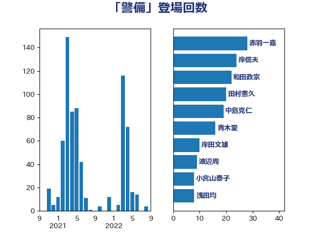

単語「警備」

| 赤羽一嘉 | 公明党 | 28 回 |
| 岸信夫 | 自由民主党 | 24 回 |
| 和田政宗 | 自由民主党 | 22 回 |
| 田村憲久 | 自由民主党 | 20 回 |
| 中島克仁 | 立憲民主党 | 19 回 |
| 青木愛 | 立憲民主党 | 16 回 |
| 岸田文雄 | 自由民主党 | 10 回 |
| 渡辺周 | 立憲民主党 | 9 回 |
| 小宮山泰子 | 立憲民主党 | 8 回 |
| 浅田均 | 日本維新の会 | 8 回 |
| 清水貴之 | 日本維新の会 | 8 回 |
| 菅義偉 | 自由民主党 | 8 回 |
| 塩村あやか | 立憲民主党 | 7 回 |
| 城井崇 | 立憲民主党 | 6 回 |
| 杉本和巳 | 日本維新の会 | 6 回 |
| 田村智子 | 日本共産党 | 6 回 |
| 阿部知子 | 立憲民主党 | 6 回 |
| 青山繁晴 | 自由民主党 | 6 回 |
| 前原誠司 | 国民民主党 | 5 回 |
| 福山哲郎 | 立憲民主党 | 5 回 |
| 篠原豪 | 立憲民主党 | 5 回 |
| 蓮舫 | 立憲民主党 | 5 回 |
| 道下大樹 | 立憲民主党 | 5 回 |
| 野田佳彦 | 立憲民主党 | 5 回 |
| 上川陽子 | 自由民主党 | 4 回 |
| 小西洋之 | 立憲民主党 | 4 回 |
| 山下芳生 | 日本共産党 | 4 回 |
| 松沢成文 | 日本維新の会 | 4 回 |
| 枝野幸男 | 立憲民主党 | 4 回 |
| 細田健一 | 自由民主党 | 4 回 |
| 丸川珠代 | 自由民主党 | 3 回 |
| 丹羽秀樹 | 自由民主党 | 3 回 |
| 加藤勝信 | 自由民主党 | 3 回 |
| 古川元久 | 国民民主党 | 3 回 |
| 大塚拓 | 自由民主党 | 3 回 |
| 大野敬太郎 | 自由民主党 | 3 回 |
| 小林鷹之 | 自由民主党 | 3 回 |
| 小田原潔 | 自由民主党 | 3 回 |
| 山口俊一 | 自由民主党 | 3 回 |
| 柴田巧 | 日本維新の会 | 3 回 |
| 細田博之 | 自由民主党 | 3 回 |
| 赤澤亮正 | 自由民主党 | 3 回 |
| 重徳和彦 | 立憲民主党 | 3 回 |
| 高橋千鶴子 | 日本共産党 | 3 回 |
| 麻生太郎 | 自由民主党 | 3 回 |
| 井上英孝 | 日本維新の会 | 2 回 |
| 伊東信久 | 日本維新の会 | 2 回 |
| 佐藤正久 | 自由民主党 | 2 回 |
| 坂井学 | 自由民主党 | 2 回 |
| 小島敏文 | 自由民主党 | 2 回 |
| 小野泰輔 | 日本維新の会 | 2 回 |
| 山際大志郎 | 自由民主党 | 2 回 |
| 斉藤鉄夫 | 公明党 | 2 回 |
| 木村英子 | れいわ新選組 | 2 回 |
| 杉尾秀哉 | 立憲民主党 | 2 回 |
| 松野博一 | 自由民主党 | 2 回 |
| 武田良太 | 自由民主党 | 2 回 |
| 浜口誠 | 国民民主党 | 2 回 |
| 渡辺猛之 | 自由民主党 | 2 回 |
| 竹内真二 | 公明党 | 2 回 |
| 鈴木宗男 | 日本維新の会 | 2 回 |
| 鈴木敦 | 国民民主党 | 2 回 |
| 鈴木英敬 | 自由民主党 | 2 回 |
| 馬場伸幸 | 日本維新の会 | 2 回 |
| 高木かおり | 日本維新の会 | 2 回 |
| 高木啓 | 自由民主党 | 2 回 |
| こやり隆史 | 自由民主党 | 1 回 |
| 三宅伸吾 | 自由民主党 | 1 回 |
| 中曽根康隆 | 自由民主党 | 1 回 |
| 二階俊博 | 自由民主党 | 1 回 |
| 加藤鮎子 | 自由民主党 | 1 回 |
| 勝部賢志 | 立憲民主党 | 1 回 |
| 吉川ゆうみ | 自由民主党 | 1 回 |
| 吉川赳 | 無所属 | 1 回 |
| 和田有一朗 | 日本維新の会 | 1 回 |
| 大口善徳 | 公明党 | 1 回 |
| 大塚耕平 | 国民民主党 | 1 回 |
| 大西健介 | 立憲民主党 | 1 回 |
| 大野泰正 | 自由民主党 | 1 回 |
| 宮崎政久 | 自由民主党 | 1 回 |
| 宮路拓馬 | 自由民主党 | 1 回 |
| 寺田静 | 無所属 | 1 回 |
| 山崎誠 | 立憲民主党 | 1 回 |
| 山本博司 | 公明党 | 1 回 |
| 岩本剛人 | 自由民主党 | 1 回 |
| 川田龍平 | 立憲民主党 | 1 回 |
| 斎藤洋明 | 自由民主党 | 1 回 |
| 新妻秀規 | 公明党 | 1 回 |
| 朝日健太郎 | 自由民主党 | 1 回 |
| 松川るい | 自由民主党 | 1 回 |
| 柚木道義 | 立憲民主党 | 1 回 |
| 柳ヶ瀬裕文 | 日本維新の会 | 1 回 |
| 榛葉賀津也 | 国民民主党 | 1 回 |
| 江田憲司 | 立憲民主党 | 1 回 |
| 浅野哲 | 国民民主党 | 1 回 |
| 片山さつき | 自由民主党 | 1 回 |
| 牧山ひろえ | 立憲民主党 | 1 回 |
| 玄葉光一郎 | 立憲民主党 | 1 回 |
| 田名部匡代 | 立憲民主党 | 1 回 |
| 秋葉賢也 | 自由民主党 | 1 回 |
| 笹川博義 | 自由民主党 | 1 回 |
| 羽田次郎 | 立憲民主党 | 1 回 |
| 芳賀道也 | 国民民主党 | 1 回 |
| 若宮健嗣 | 自由民主党 | 1 回 |
| 荒井優 | 立憲民主党 | 1 回 |
| 萩生田光一 | 自由民主党 | 1 回 |
| 藤巻健太 | 日本維新の会 | 1 回 |
| 西村康稔 | 自由民主党 | 1 回 |
| 西村智奈美 | 立憲民主党 | 1 回 |
| 赤嶺政賢 | 日本共産党 | 1 回 |
| 逢坂誠二 | 立憲民主党 | 1 回 |
| 金子恭之 | 自由民主党 | 1 回 |
| 鈴木庸介 | 立憲民主党 | 1 回 |
| 階猛 | 立憲民主党 | 1 回 |
| 高木毅 | 自由民主党 | 1 回 |
| 鬼木誠 | 立憲民主党 | 1 回 |
| 鳩山二郎 | 自由民主党 | 1 回 |
| 鶴保庸介 | 自由民主党 | 1 回 |